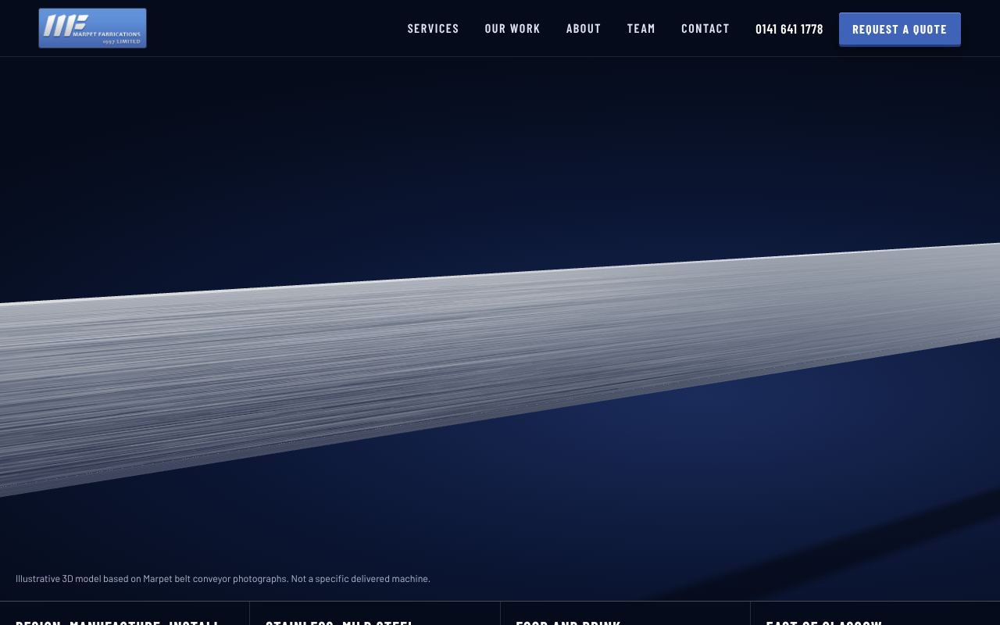
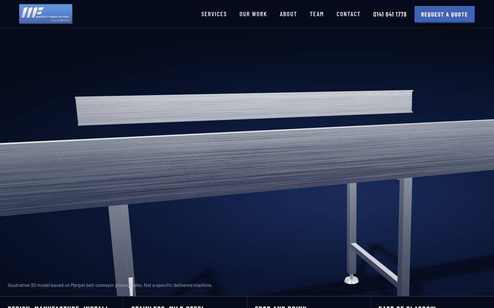
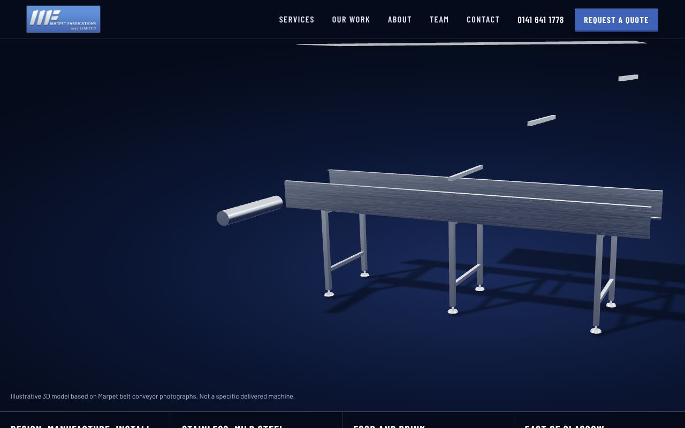
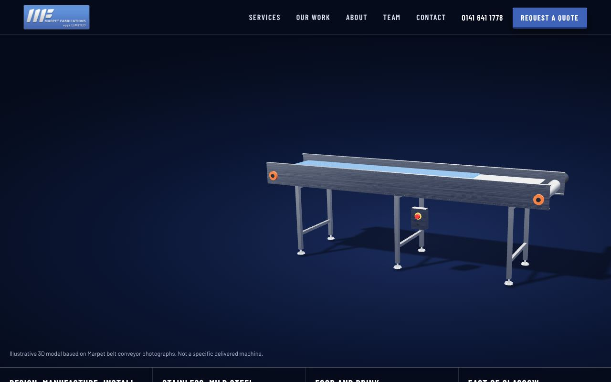
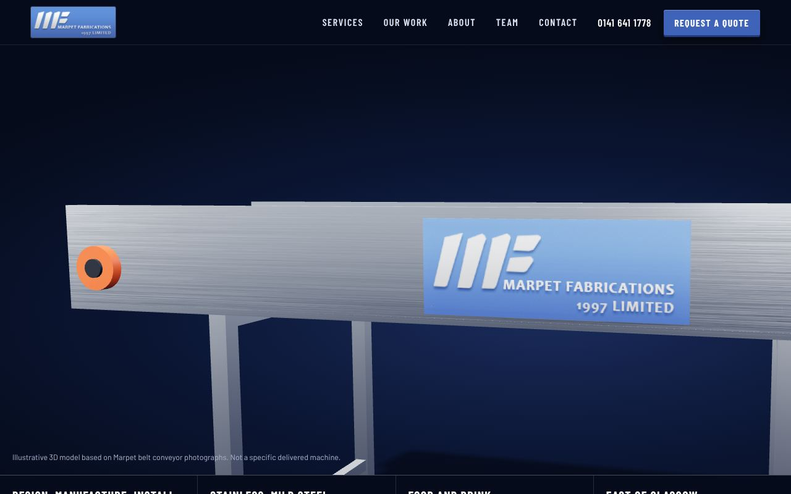
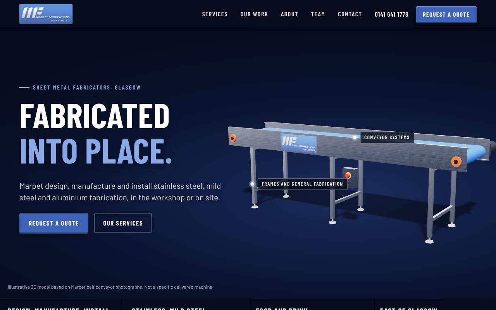
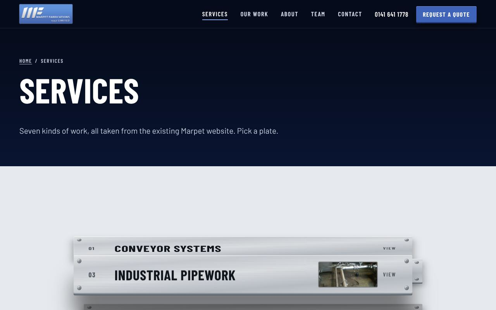
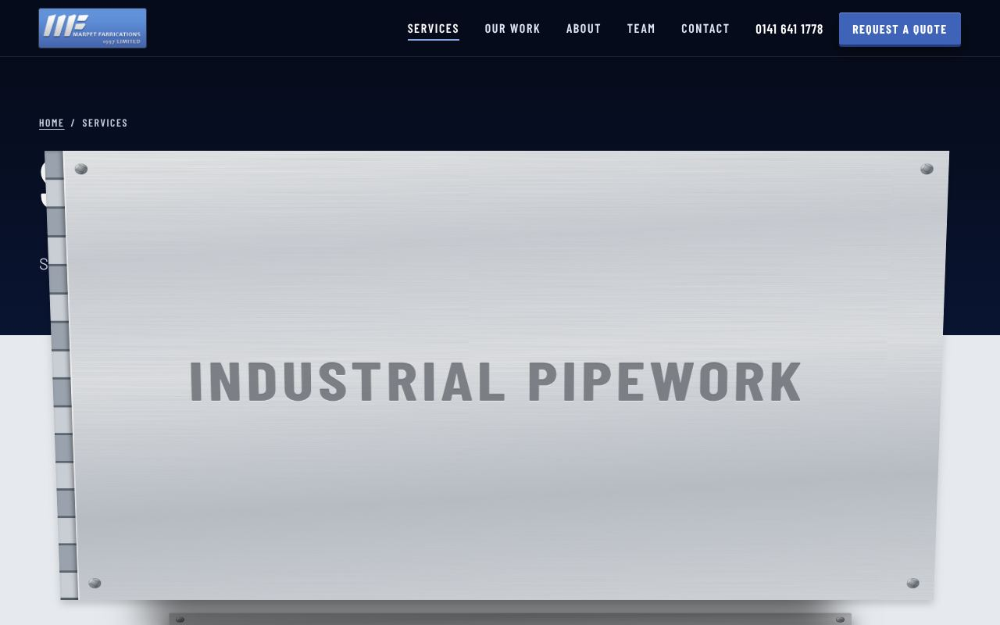
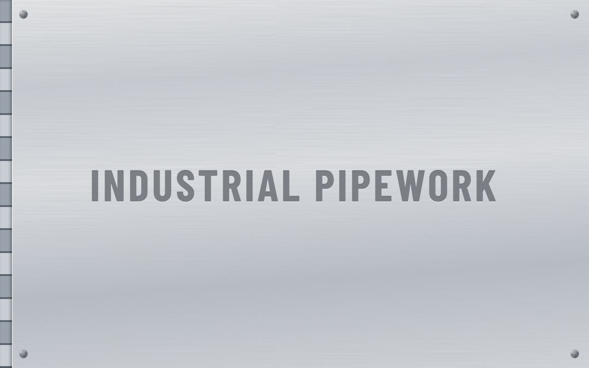
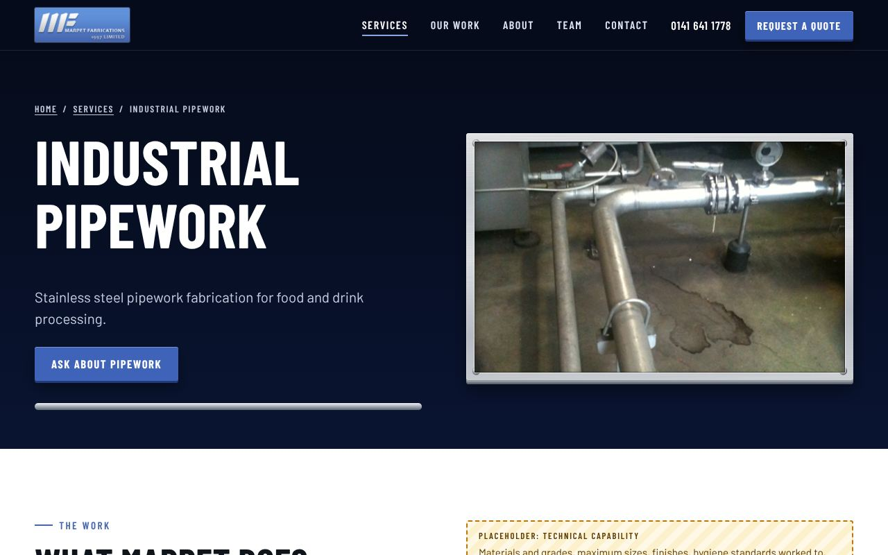

Storyboard and concepts
Frames below are captured from the working prototype, not drawn.
Phase 3
Conveyor hero storyboard

ArrivalOne brushed stainless side frame travels in along its length, close to camera. Folded lips and sheet thickness are visible. The header, navigation and quote button are already usable.0.0 to 1.5 s
LegsThree square-tube leg frames with adjustable feet roll in from the far side. Camera begins to pull back.1.3 to 2.6 s
Frame closesFar side frame slides in. Cross members and the slider bed lower into the frame, decelerating before contact.2.0 to 3.4 s
Running gearEnd rollers enter axially, flange bearings and drive seat, then the blue modular belt feeds across.2.9 to 4.5 s
Brand revealThe frame lowers onto its feet. The existing Marpet logo plate swings up, meets the side frame and four bolts turn in.4.5 to 6.0 s
Website revealCamera pulls back to the hero composition. Headline, intro and buttons rise in. The belt keeps running.6.0 to 7.5 s
Phase 3
Plate page transition

SelectThe selected navigation item or plate is the source of the panel.
Lift and rotateThe plate lifts 14 px, tips toward the viewer and grows to fill the screen. 620 ms.
SwapBehind the plate the new page is fetched and swapped in. The URL changes with history.pushState.
Hinge openThe plate swings open on its left hinge and the new page is there. 560 ms. Back reverses it.
Two variants share the same steel, bolts and easing: a roller shutter for Contact and quote links, and a photograph frame that expands into project pages.
Phase 2
Concept A against Concept B
| Criterion | A: Conveyor assembly | B: Architectural fabrication |
|---|---|---|
| Realism | High. A real-time PBR steel model with reflections, shadows and weight. | Medium. CSS steel reads as metal but is flat. |
| Visual impact | High. One memorable moment that is about Marpet’s main product. | Medium to high. Strong first fold, less distinctive. |
| Relevance to Marpet | High. Conveyors lead the existing site and photographs. | Medium. Sheet metal is accurate but generic. |
| User experience | Good. Intro is 7.5 s, skippable, shown once. | Good. Nothing to wait for. |
| Mobile | Good with care. Model sits above the copy, capped pixel ratio. | Very good. CSS only. |
| Performance | About 2.1 MB of unminified 3D library in this prototype (roughly 180 KB gzipped once tree-shaken and minified), loaded after first paint. | Very light. No extra libraries. |
| Build complexity | Higher. Model, lighting and fallbacks to maintain. | Low. |
| Maintenance | Model changes need a developer. Content does not. | Anyone who can edit CSS. |
Recommendation: Concept A for the homepage hero, with Concept B's CSS panel system used for every page transition and component. That is what this prototype does.